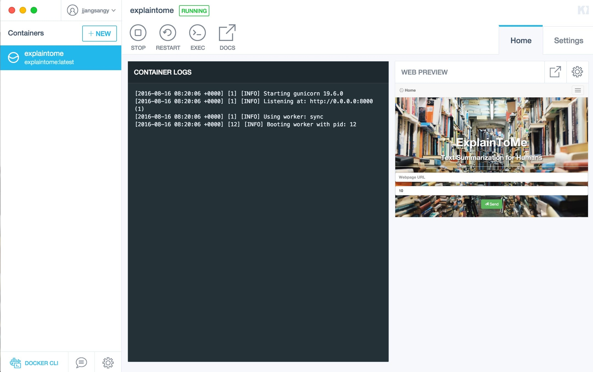

ExplainToMe


Automatic Web Article Summarizer

What is it?
Explain To Me is a automatic text summarizer, that utilizes
TextRank,
a graph based algorithm to scans through the contents of a website to
extract a concise machine generated summary. The methodology is similar
to the way search engines return the most relevant web pages from a
users search query.
Support
Here’s a list of Python platforms that are officially supported.
- Python 2.7
- Python 3.4
- Python 3.5
- pypy 2.5.0 -> 2.7.9
Quickstart
Install
Clone Repository
$ git clone https://github.com/jjangsangy/ExplainToMe.gitCreate a virtualenv
$ virtualenv -p python venvSource Virtualenv
$ source venv/bin/activateInstall Python Dependencies
$ pip install --upgrade pip setuptools wheel
$ pip install -r requirements.txtRun Server
$ python manage.py runserver
Running on http://127.0.0.1:5000/ (Press CTRL+C to quit)Now go to your browser and point it towards http://127.0.0.1:5000
Docker
Running ExplainToMe via the official Docker image is an easy way to start a server if you don't want to install python.
We assume here you have already installed Docker for your system.
If you are getting started on OS X, the Docker toolbox is the first thing to checkout.
$ docker run -it -p 5000:5000 jjangsangy/ExplainToMe:latestOnce the server is running, navigate to either localhost:5000 (on Linux) or hostname:5000 (on Mac OS X), where hostname is the IP addresses of your virtual machine, obtained using
$ docker-machine ip my-vm-nameNow access your docker machine ip at port docker-machine-ip:5000
Kitematic
You might also want to try Kitematic on OS X which provides a GUI for running Docker images.
Running ExplainToMe through Kitematic is easy, just search for the
jjangsangy/ExplainToMe image, start it, and you should see it running

Things to look forward to:
- Summaries of documents in other languages than English!